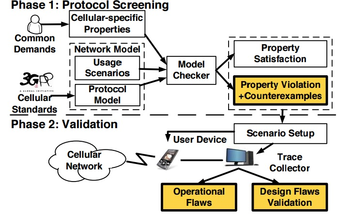

Guan-Hua (Scott) Tu
Assistant Professor
Department of Computer Science and Engineering,
Michigan State University
428 S SHAW LN, ROOM 3115
East Lansing, MI 48824-1266
Email: ghtu AT msu.edu
Office: 2507B Engineering Building
Research Experience
- CNetVerifer: An Automated, Extensible Control-Plane Protocol Verification Tool [SIGCOMM'14, IEEE/ACM ToN'15]
- CNetVerifier Overview
- New Security Threats Toward Data Service by Exploiting Control Plane of Voice Services [MOBICOM'13, CCS'15, CNS'15]
- Ping-pong attack : tears down all TCP connections in few minutes and largely downgrades UDP throughput.
- Free-data-service, data DoS, overbilling, voice muted attacks : abuse VoLTE signaling bearer.

Demo 1: :[Free data service video] Demo 2:[Voice muted attack video]
- Media report
- Accouting, Charging Issues, Security Attacks and Countermeasures on Mobile Data Networks [MOBICOM'12, CCS'12, MOBIYSY'13, CCS'14]
- Users pay for what they never get (User is overcharged when signal strength is weak)
- Users pay nothing for what they get (Carriers do not charge DNS traffic (UDP:53) at all)
- Media report
We developed CNetVerifier, an automated control-plane protocol verification tool with domain-specific heuristics and model checking techniques, to systematically explore possible problematic interactions in cellular networks. The main advantage of this methodology is that the exploration of control plane protocol interactions will not be restricted by the unlimited possible use scenarios (it is time consuming to explore all of them by empirical approaches). Its impact on the wireless/mobile networking technology and cybersecurity can be considered as far-reaching. It does not only capture the fundamental design issues of mobile networks span over multiple dimensions, but also discover the security loopholes caused by improper designs of control-plane protocols of mobile networks. The lessons we learned can be even applied to the next big things (e.g., 5G, Internet of Things, Device-to-Device communication) in the area of networking.

There are two voice solutions for 4G LTE users: CSFB (Circuit-Switched FallBack) and VoLTE (Voice Over LTE). Our study shows that both of them introduce new security threats toward individuals or carrier networks due to their improper control-plane designs. For CSFB, its control plane is designed to switch 4G users back to 2G/3G to access CS voice service. If 4G users refuse the inter-system switch, they cannot dial any calls or receive calls. In MOBICOM'13, we discovered that voice calls might incur the throughput drop (up to 83.4%) or even the stop of data transmission for seconds, the loss of 4G connectivity, and the termination of data sessions due to its inappropriate control-plane designs. In CNS'15, we demonstrated how the adversary remotely launched the ping-pong attacks to (1)tear down all TCP connections within few minutes, (2)get Internet applications aborted, or (3)deprive users' 4G LTE connectivity without their consent. For VoLTE, we devised four novel attacks. (1) Free data service attack: accesses Internet at no cost in two tier-one US carrier networks. (2) Data DoS attack: shuts down any ongoing data service at the victim by injecting high-rate spamming traffic to the high-priority signaling bearer reserved for the control-plane signaling of VoLTE. (3) Overbilling attack: bypasses NAT/Firewall deployed by carriers and sends many spamming packets to a victim's phone from another mobile phone. And the victim has to pay for the unsolicited packets. (4) Voice muted attack: makes caller and callee not to hear each other. To broaden the real-world impact of our research, we actively cooperated with tier-one US carriers, e.g., Verizon and T-Mobile, and fixed the security loopholes we discovered. We received the positive feedback from those carriers. The National Science Foundation (NSF) also funded us to continue the study of the security vulnerabilities of the control plane of the existing and future mobile networks. More detailed information and latest updates can be found in our project website (UCLA-OSU cooperation research project).


The accounting of data usage is the most important functionality in the management plane of the cellular network. However, we found that the control-plane and management-plane functions of the cellular network are not well designed from either charging accuracy or security aspect. In MOBICOM'12 and MOBISYS'13, our results yielded three counter-intuitive findings. First, users are charged for what they never receive in the extreme case. Second, users can obtain what they want in mobile data access at no cost (free of charge). Third, users have to pay for the packets dropped by carriers during user mobility. The fundamental problem is that the 3G/4G standards adopt a centralized accounting architecture. When things go wrong outside the centralized charging network elements, the resulting data volume deviates from what is observed at the end devices. In CCS'12 and CCS'14, we discovered several security vulnerabilities along with the improper coordination between the control plane and management plane. First, the decoupling of authentication, authorization, and accounting of data service gives a great opportunity to an attacker to send the spoofed packets (i.e., use a victim's address as the source address of the packet) to any host on Internet, and the charging elements further charge the victim instead of the attacker. Second, the victim cannot ask the network to stop the delivery of malicious spamming packets unless they tear down the bearers created for data services. Our contributions are to identify new security threats to cellular systems from the charging/accounting perspective and draw more people's attentions to this important topic. Our research results have received several media reports including MIT review, Computer World, Fiscal Times, and TheVerge. Three major US operators have adopted our approach to fix the free data service problem. Our work also stimulated several follow-up works related to the charging/accounting of mobile networks. They were published in MOBICOM'13, IMC'14, CCS'14, NDSS'14, CCS'15, MOBICOM'15 and etc.